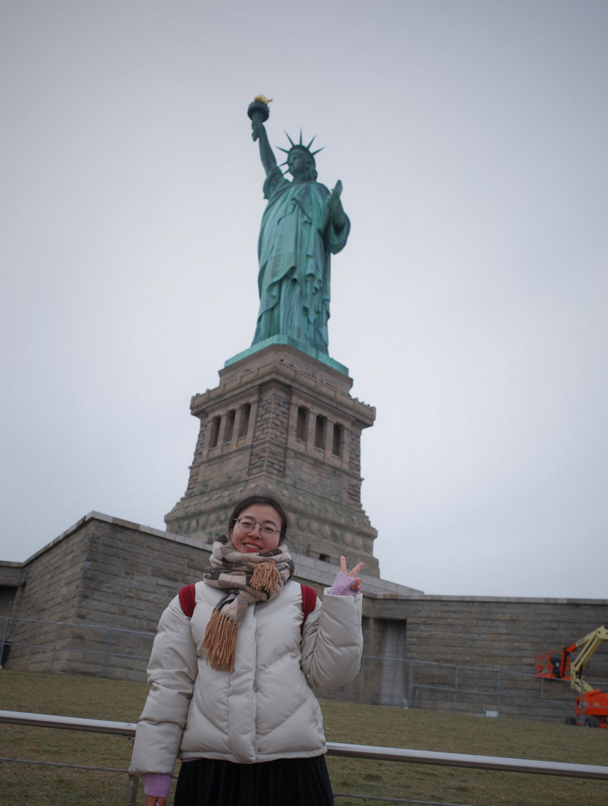
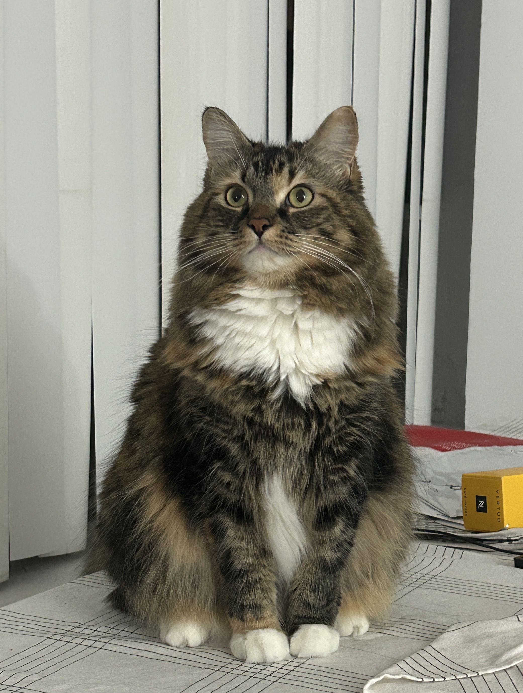

Changchang Sun (孙畅畅)Ph.D. Student
CVM Lab @ UIC |
 |
About Me
I am a final-year Ph.D. student (expected graduation: May 2027) in the Computer Vision and Multimedia Laboratory (CVMLab) at the University of Illinois Chicago (UIC), supervised by Prof. Yan Yan. Before joining UIC, I studied at the Illinois Institute of Technology (IIT) (Aug. 2021-Dec. 2024, transferred to UIC with my advisor), supervised by Prof. Yan Yan, and was a visiting student (Aug. 2023-May 2025) at Michigan State University under the supervision of Prof. Sijia Liu. Before that, I received my Master's and Bachelor's degrees in Computer Science and Technology from Shandong University in 2021 and 2018, supervised by Prof. Xuemeng Song and co-supervised by Prof. Liqiang Nie. I have also interned as a research scientist at TikTok (Summer 2026) and Pony.ai (Summer 2025).
My research interests include:
- Generative AI: dance-to-music generation with latent diffusion models;
- Trustworthy ML: machine unlearning, adversarial attack;
- Computer Vision: human-object interaction detection;
- Multimedia Retrieval: cross-modal hashing.
I am currently on the job market for academic and industrial research positions starting Fall 2027. Please see my CV and Google Scholar. Feel free to reach out if you think I could be a good fit.
News [ ]
]
|
Publications
Preprints
First-Authored Publications
Co-Authored Publications
Junyi Wu, Van Nguyen Nguyen, Benjamin Planche, Jiachen Tao, Changchang Sun, Zhongpai Gao, Zhenghao Zhao, Anwesa Choudhuri, Gengyu Zhang, Meng Zheng, Feiran Wang, Terrence Chen, Yan Yan, Ziyan Wu
IEEE/CVF Conference on Computer Vision and Pattern Recognition (CVPR), 2026
arXiv BibTeX
Work Experience
- TikTok, San Jose, CA, Research Intern, AIGC content generation and video color grading, May 2026-Aug. 2026.
- Pony.ai, Fremont, CA, Research Intern, 3D object detection, May 2025-Aug. 2025.
Invited Talks
- Forget Vectors at Play: Universal Input Perturbations Driving Machine Unlearning in Image Classification, University of Illinois Chicago, invited by Prof. Lu Cheng, Nov. 2025.
Selected Awards & Honors
- CVPR 2022 Student Travel Award for in-person conference at New Orleans, USA, 2022.
- SIGIR 2019 Student Travel Award for in-person conference at Paris, France, 2019.
- Excellent Postgraduate, Shandong University, 2019.
- Dean Scholarship, School of Computer Science and Technology, Shandong University, 2019.
Academic Services
Conference Reviewer
- International Conference on Learning Representations (ICLR): 2024, 2025, 2026
- Annual Conference on Neural Information Processing Systems (NeurIPS): 2024, 2025, 2026
- IEEE/CVF Conference on Computer Vision and Pattern Recognition (CVPR): 2023, 2024, 2025, 2026
- AAAI Conference on Artificial Intelligence (AAAI): 2024, 2026
- European Conference on Computer Vision (ECCV): 2024
- IEEE/CVF Winter Conference on Applications of Computer Vision (WACV): 2026, 2027
- ACM International Conference on Multimedia (ACM MM): 2021, 2022, 2023, 2024
- ACM Web Conference (WWW): 2025
Journal Reviewer
- IEEE Transactions on Pattern Analysis and Machine Intelligence (TPAMI).
- IEEE Transactions on Knowledge and Data Engineering (TKDE).
- ACM Transactions on Multimedia Computing, Communications, and Applications (TOMM).
- IEEE Transactions on Circuits and Systems for Video Technology (TCSVT).
- Elsevier: Information Sciences (INS).
- Elsevier: Neurocomputing (NEUCOM).
- Elsevier: Computer Vision and Image Understanding (CVIU).
Conference Organizing Committee
- Finance Chair, ACM International Conference on Multimedia Retrieval (ICMR), 2025.
Teaching Experience
- Teaching Assistant, UIC: Mathematical Foundations of Computing, Fall 2026 (Prof. Drishika Dey and Prof. Mitch Theys).
- Teaching Assistant, UIC: Mathematical Foundations of Computing, Spring 2026 (Prof. Omar Ibrahim).
- Teaching Assistant, UIC: Introduction to Machine Learning, Fall 2025 (Prof. Hao Chen).
- Teaching Assistant, IIT: Advanced Machine Learning, Spring 2022 (Prof. Yan Yan).
- Teaching Assistant, Shandong University: Fundamentals of Electric Circuits, 2019-2021.
Mentoring
- Zhiliang Wu (Ph.D., Nanjing University of Science and Technology), Jan. 2022-Aug. 2024, outcomes: CVPR'23 (×2), AAAI'24, TCSVT'22.
- Nikhil Sharma (Ph.D., Illinois Institute of Technology), Jul. 2024-Dec. 2024, outcome: MMM'25.
- Hao Ding (Ph.D., Illinois Institute of Technology), Jul. 2023-Oct. 2023, outcome: WACV'23.
|
Last Updated on August 28, 2026
 |